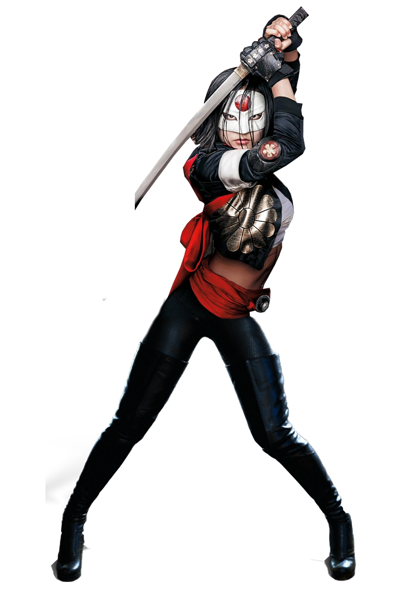

Criação de Katana
Katana é uma personagem dos quadrinhos da DC Comics, conhecida por sua habilidade com
a espada e sua história trágica. Ela foi criada por Mike W. Barr e Jim Aparo,
fazendo
sua primeira aparição em "The Brave and the Bold #200" em 1983.
O Personagem Katana
Katana, cujo nome verdadeiro é Tatsu Yamashiro, é uma mestra na arte da espada e uma
guerreira altamente habilidosa. Ela possui uma espada chamada "Soultaker", que
é mística e tem a capacidade de capturar almas.
Katana é retratada como uma
personagem complexa, lutando contra o mal
enquanto carrega o peso de uma
tragédia pessoal.
Tatsu Yamashiro é uma mulher de origem japonesa e sua história é marcada por eventos trágicos. Ela perdeu
seu marido e filhos para um grupo criminoso conhecido como Yakuza e busca vingança contra aqueles que lhe
causaram tanta dor. Sua busca por justiça é impulsionada por sua determinação e por sua conexão espiritual
com a espada Soultaker.
Quadrinhos Importantes de Katana
Katana teve várias histórias importantes nos quadrinhos da DC Comics, explorando sua história de origem,
suas aventuras como membro de equipes de super-heróis e sua luta contra o crime. Aqui estão alguns dos
quadrinhos mais relevantes do personagem:
"The Brave and the Bold #200" (1983):
Esta edição apresenta a primeira aparição de Katana nos quadrinhos, estabelecendo sua história de origem e
suas habilidades com a espada.
"Katana Vol. 1: Soultaker" (2013-2014):
Escrita por Ann Nocenti, esta série em 10 edições explora as aventuras solo de Katana, destacando sua
conexão com a espada Soultaker e sua luta contra o mal.
"Suicide Squad Vol. 4: Discipline and Punish" (2012):
Katana é uma personagem recorrente na série do Esquadrão Suicida, mostrando sua participação nas missões
perigosas do grupo e seu papel como membro valioso da equipe.
Adaptações em Outras Mídias
Katana também teve várias aparições em outras mídias, incluindo filmes e séries de TV. Aqui estão algumas
das adaptações notáveis do personagem:
Filme "Esquadrão Suicida" (2016):
Katana é interpretada por Karen Fukuhara neste filme de live-action, onde ela se junta ao Esquadrão Suicida
e mostra suas habilidades com a espada em combate.
Série de TV "Arrow" (2012-2020):
O personagem Katana aparece em alguns episódios da série "Arrow", interpretada por Rila Fukushima, mostrando
sua relação com o Arqueiro Verde e sua busca por justiça.
Habilidades de Katana
Katana é uma espadachim habilidosa e possui uma série de habilidades únicas. Aqui estão algumas de suas
principais habilidades:
Mestre na Arte da Espada:
Katana é uma mestra na arte do combate com espadas, usando sua habilidade e destreza para derrotar seus
inimigos.
Alma Capturada:
Sua espada Soultaker tem a capacidade de capturar a alma daqueles que são derrotados por ela, permitindo que
ela se comunique com as almas dos mortos.
Agilidade e Reflexos Aprimorados:
Ela possui agilidade e reflexos aprimorados, permitindo que ela esquive de ataques e reaja rapidamente em
combate.
Conexão Espiritual:
Katana tem uma conexão espiritual com sua espada Soultaker, permitindo que ela acesse a sabedoria e o poder
das almas capturadas pela espada.
Conclusão
Katana é uma personagem fascinante e habilidosa dos quadrinhos da DC Comics, conhecida por sua maestria na
arte da espada e sua história trágica. Sua busca por vingança e justiça, sua conexão com a espada Soultaker
e suas habilidades únicas a tornam uma personagem cativante. Com aparições em quadrinhos, filmes e séries de
TV, Katana continua a encantar os fãs com suas aventuras emocionantes e seu papel como membro valioso de
equipes de super-heróis como o Esquadrão Suicida. Sua maestria na arte da espada, a capacidade de capturar
almas com a espada Soultaker e sua conexão espiritual fazem dela uma guerreira formidável e uma personagem
icônica no universo da DC Comics.